The Navigation of UWP Apps are extremely cool and easier than other platforms. It allows to enable a variety of intuitive user experiences for moving between apps, pages, and content.
Navigation is the key part of the Application. In your small Apps, you may maintain your contents and functionality in a single page. Perhaps majority of apps really required the multiple pages for contents and functionality. So! When an app has more than a page, you have to provide the navigation experience.
To give the user a great, you really have to care about few major things;
You have to Build such a navigation structure that makes sense to the user is crucial to creating an intuitive navigation experience. The way you arrange these pages into groups defines the app's navigation structure. Basically, there are two common ways to arrange a group of pages;
In a hierarchy;
The pages are organized into a tree structure. To reach a child page, you travel through the parent.
As peers;
The pages exist side-by-side. You can go from one page to another in any order.
Normally an app will use both arrangements;
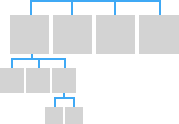The hieratical or tree structure is important you got more than 7 pages because it might be difficult for users to understand the page flow. Perhaps for less than 8 Pages or if the parent child relation is not possible then peer relationship is important.
The Navigation elements should help the user get to the content they want and should also let users know where they are within the app. However, they also take up space that could be used for content or commanding elements, so it's important to use the navigation elements that are right for your app's structure.
The Navigation elements can provide two services: they help the user get to the content they want, and some elements also let users know where they are within the app. However, they also take up space that the app could use for content or commanding elements, so it's important to use the navigation elements that are just right for your app's structure.
Peer-to-peer navigation elements; It enable navigation between pages in the same level of the same subtree.
If your navigation structure has multiple levels, it is recommended that peer-to-peer navigation elements only link to the peers within their current subtree. Consider the following illustration, which shows a navigation structure that has three levels;
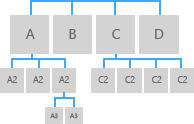For level 1, the peer-to-peer navigation element should provide access to pages A, B, C, and D.
At level 2, the peer-to-peer navigation elements for the A2 pages should only link to the other A2 pages. They should not link to level 2 pages in the C subtree.
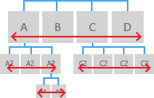Hierarchical navigation elements provide navigation between a parent page and its child pages.
The Universal Windows Platform (UWP) provides a consistent back navigation system for traversing the user's navigation history within an app and, depending on the device, from app to app.
The UI for the system back button is optimized for each form factor and input device type, but the navigation experience is global and consistent across devices and UWP apps.
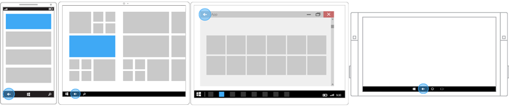Now with UWP you’ve some more alternative input types that don't rely on a back button UI, but still provide the exact same functionality.
Including Keyboard and Cortana (Hey Cortana, go back). : - )
When the user pressed the back button. The user expects the back button to navigate to the previous location in the app's navigation history.
Previously in Universal Applications, it could have several pages and when we want to navigate through different pages, it opens a new window. But in Universal Windows Platform, there is only one window. When we want to open a different page, it opens a new frame.
So! let’s see how it works in Universal Windows Platform page navigation. Let’s get started;
Simply create a new blank project in Visual Studio with name ‘UWPNavigation’;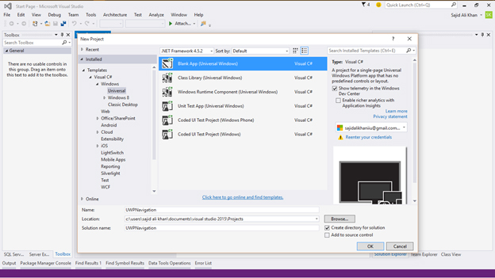
So in order to perform navigation, we need more than one page. So let’s create another Blank Page. Simply click upon add new items by right click the project and create a Blank Page with name ‘Second Page’;
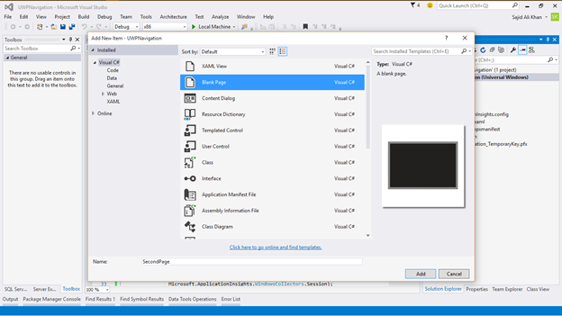Now back to the MainPage and create a button object;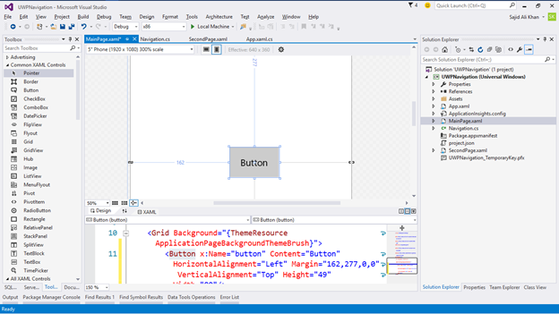
And modify the Click attribute from properties;<Button x:Name="button"
In order to make the page arrtractice, also add TextBlock to show some text on the Page;<StackPanel Grid.Row="0" Margin="19,0,0,0">
Now in the logical file, insert the event handler for the Button object;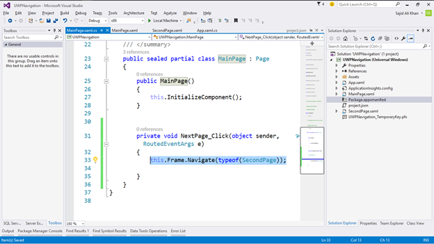 this.Frame.Navigate(typeof(SecondPage));
So this one line will navigate you from one page to another page…
Now in Second Page, modify the page by adding two TextBlocks for better response;
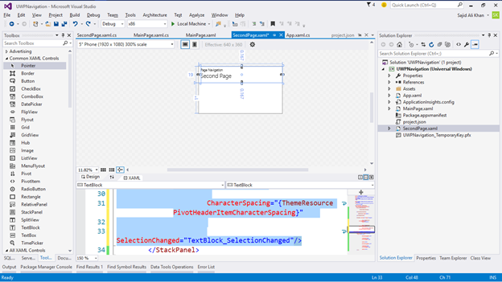 <TextBlock Text="Page Navigation"Now add the back button;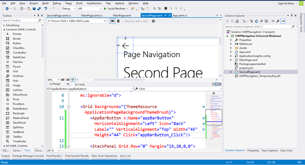 <AppBarButton x:Name="appBarButton"
Like before, by adding a one line code event handler, the appBarButton will take us to MainPage again;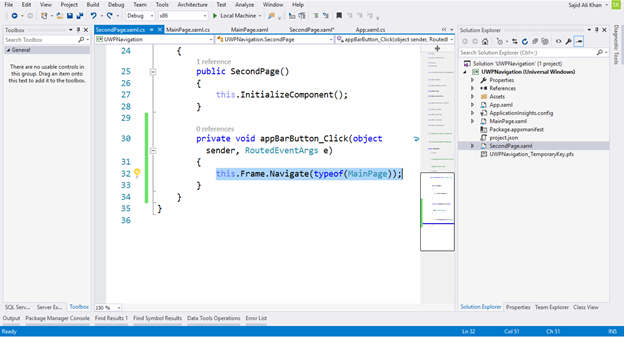 this.Frame.Navigate(typeof(MainPage));
Now if we run, we can see the navigation works according to our expectations;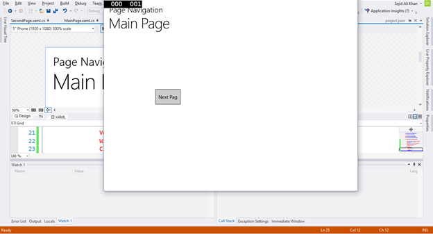 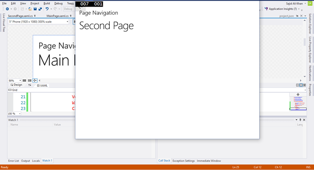
So! See the navigation is so entrusting and logically managed in our App…
In order to get a best hands-on experience along with the Blog. Try out the code either By MSDN Code Samples or By GitHub.. SoftwareWarrior
Copyright © 2015 - Designed by Sajid Ali Khan